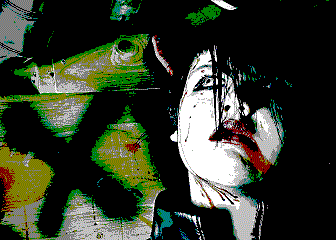

|
Silver Shadow is a Canadian rock band formed in 2020 in Winnipeg, Manitoba, by its namesake founder, Silver Shadow. The band’s first release, the 2024 demo Executable, was created during a period marked by overwhelming psychological strain. It emerged from an attempt to express thoughts and emotions that had become increasingly difficult to process through words alone. With time came a deeper understanding that Executable represented only a fraction of what it was trying to communicate. Rather than serving as a complete statement, it became the foundation for a much broader artistic direction. The current project expands upon those ideas, seeking to translate an otherwise indescribable state of mind into sound. Through unpredictable composition, layered textures, audible samples, and emotionally driven performances, Silver Shadow explores the irrational, volatile, exhausting, and deeply personal landscape of the human mind not simply to tell a story, but to immerse the listener in an experience that words alone cannot adequately describe. |
 |
| RETURN TO MAIN TERMINAL |